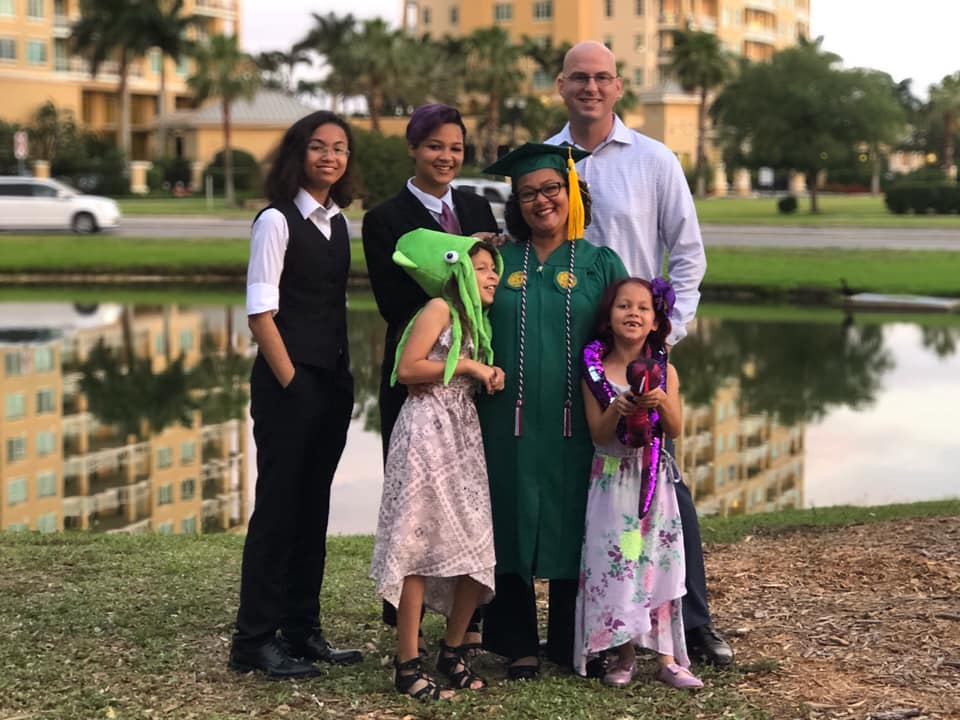

About Me
Lynn is an aspiring web developer, who is currently working towards her Masters Degree in Learning Design & Technology. Her mission is to revolutionize the way technology is used to facilitate learning for knowledge seekers of all ages. She is a wife, a mother, Air Force veteran, avid coffee drinker and enthusiastic novice rock climber.
See My Work
Follow my progress through Web Programming 1:
